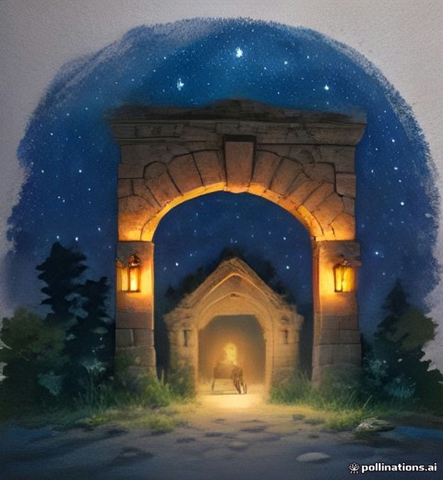
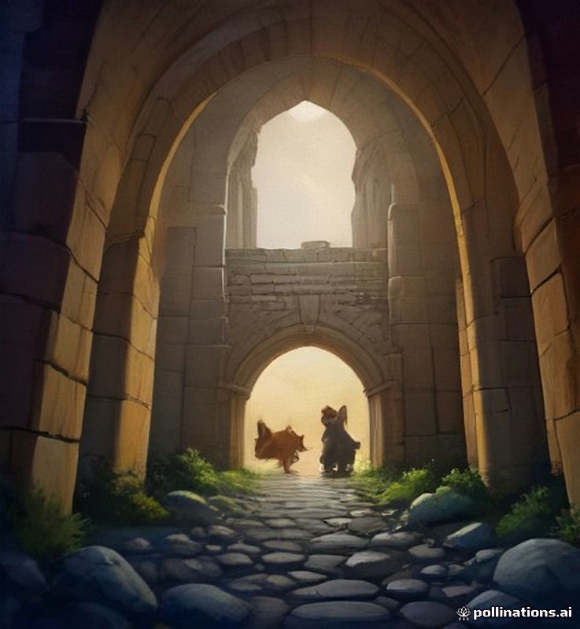
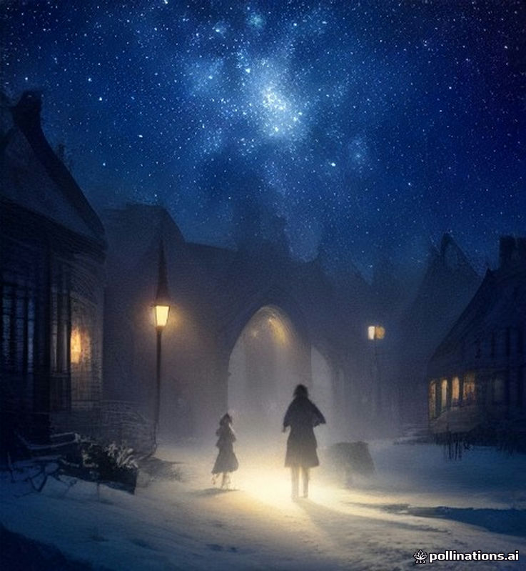
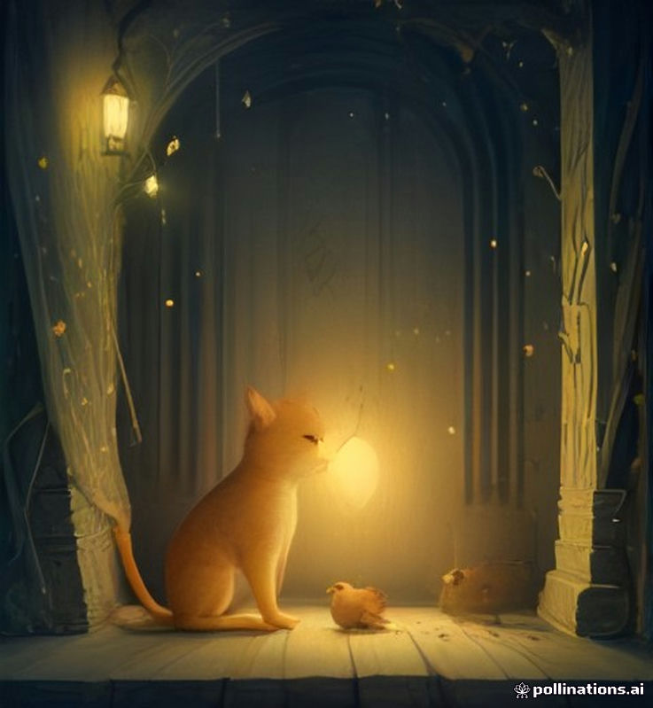
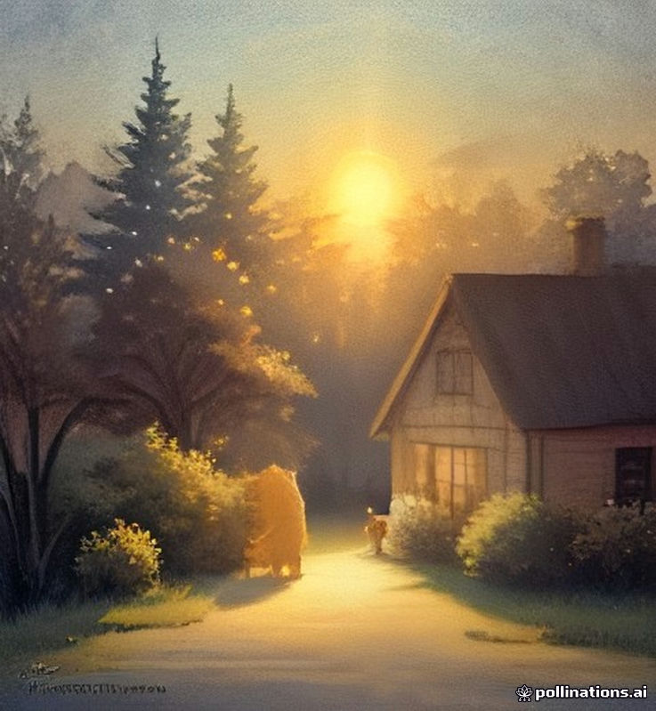

A magical archway turns heavy heart-wishes into light, flying dreams that visit the town at night.

At the edge of the plaza stands a secret gate made of ancient stone and silver threads that shimmer like dew. It is the Moth of Midnight Wishes. Most of the day, it looks like a simple archway, but Pip and I know better. We wait until the sun dips behind the pixel-art hills and the sky turns the color of a ripe plum. That is when the stone begins to breathe a soft, pale light, waking up for its nightly job of gathering the town's hopes.

Every resident in town has a wish. Some are big, like wanting a giant cake, and some are small, like wishing for a warm pair of socks. Sometimes, these wishes feel heavy, like stones in a pocket. One by one, the townspeople whisper their dreams into the wind. The wind carries them to the archway, where they get caught in the silver threads. The moth holds them gently, keeping them safe from the cold night air while they wait for the magic to begin.

When the clock strikes twelve, something magical happens. The archway doesn't just glow; it flutters! The stone wings seem to move, shaking off the heaviness of the day. The silver threads turn into golden light, and the captured wishes sprout tiny gossamer wings of their own. They aren't heavy anymore. They are light as air, dancing around the plaza in a swirl of sparkles. Pip tries to catch one, but they are far too quick and happy to be caught by a mouse.

The wishes fly over the rooftops, visiting every bedroom window to turn into sweet, peaceful dreams. By the time the first light of morning touches the town, the archway is quiet stone once again, resting for the next night. Pip and I walk back to our cozy house, feeling light and hopeful. The Moth of Midnight Wishes has done its work, and our town is full of people waking up with smiles, ready to work together to make those dreams come true.